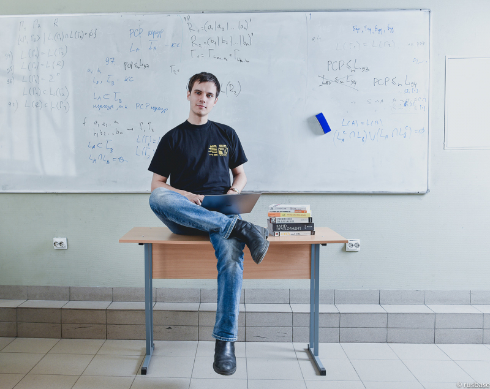
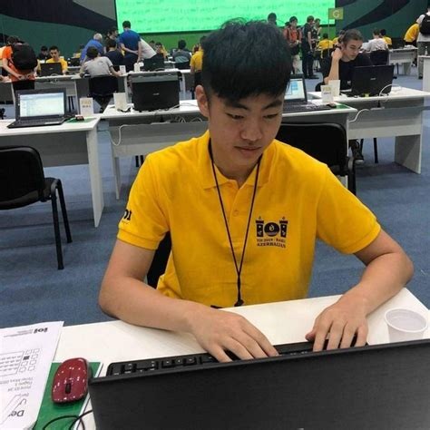

This project is created for the course Μ126 - Data Visualization of the MSc in Computer Science at UoA.
Use computer screen while seeing the website for better experience.
Introduction
A human mind is capable of many things. One of these, is to solve complex logical problems given a set of
constraints and within a time limit. Using computer code to achieve that with the best possible performance
is the concept of competitive programming. This type of sport became famous through competitions
(e.g. Google Code Jam) where programmers competed for awards and through YouTube channels where users recorded
themselves solving problems (in websites like LeetCode, HackerRank, etc.). It is also common nowadays for a job
candidate to be asked to solve similar kind of problems during the coding interview.
Like every sport, CP (competitive programming) has its own champions. Below are 2 of the most well known
"athletes".

🇧🇾 Gennady Korotkevich
🏷️aka "Tourist"
Gennady Korotkevich is a Belarussian competitive programmer. He has won major international competitions
since the age of 11, as well as numerous national competitions. His top accomplishments include six
consecutive
gold medals in the International Olympiad in Informatics as well as the world championship in the 2013 and
2015
International Collegiate Programming Contest World
Finals.
As of October 2023, Gennady was the highest-rated programmer on Codeforces, CodeChef, Topcoder, AtCoder
and
HackerRank. In January 2022, he achieved a historic rating of 3979 on Codeforces, becoming the first to
break
the 3900 barrier. His current rating is 3843 and he uses C++ 20 to solve his programming problems.
At this time, he's studying for his PhD in ITMO, one of Russia's top universities.

🇹🇼 William Lin
🏷️aka "twilliamlin168"
William Lin is a competitive programmer from Taiwan. William gained significant popularity during the
COVID
period, through his YouTube channel and especially this video:
Winning Google Kickstart Round A 2020 + Facecam
where he won the first round of Google's Kickstart competition within 16 minutes!
Other accomplishments include William being 2nd place in 2019 International Olympiad of Informatics (IOI),
1st place in 2020 IOI and having a Grandmaster rank in every Competitive Programming website.
His current rating is 2931 (International Grandmaster) in Codeforces and 2916 (7 stars) in Codechef.He
also
uses C++ 20 to solve programming problems.
William is, at this time, studying for his MEng in Electrical Engineering and Computer Science at MIT.
Project
This website showcases some visualizations that provide information and facts about CP. Along with each diagram,
we have included a succinct analysis of it and what knowledge can one extract from studying it. Possible
justifications of the results may also be written.
We classified 5 categories with the data we had available. This helped us break down our visualizations into
smaller domains and work independently. These categories are: programming language, problem/solution, time, memory
and website. We explain each category in its dedicated page.
"Target group"
We have 2 kinds of audiences, one bigger and one smaller. The bigger one are the people with an interest in
programming and the smaller one are the CodeChef's managers (we could say we are "playing" in both B2C and B2B
fields). This separation occurs from the classification we talked in the previous section. The first four domains
aim the former group (even though CodeChef can utilize the knowledge) and the last one (i.e. the website category)
aims the latter group.
Process
Our team analyzed a dataset from Kaggle that contained data collected from CodeChef, a site to solve coding
problems. Specifically, we had 1474 problems and more than 1 million solutions to these. Namely, some features
from both sheets are problem's level, tags, user's solutions, solution's status, etc. Each team member worked
independently in his category. Nevertheless, we had already discussed what visualizations we wanted and how we
would achieve that in terms of processing data, what type of diagram to use, etc..